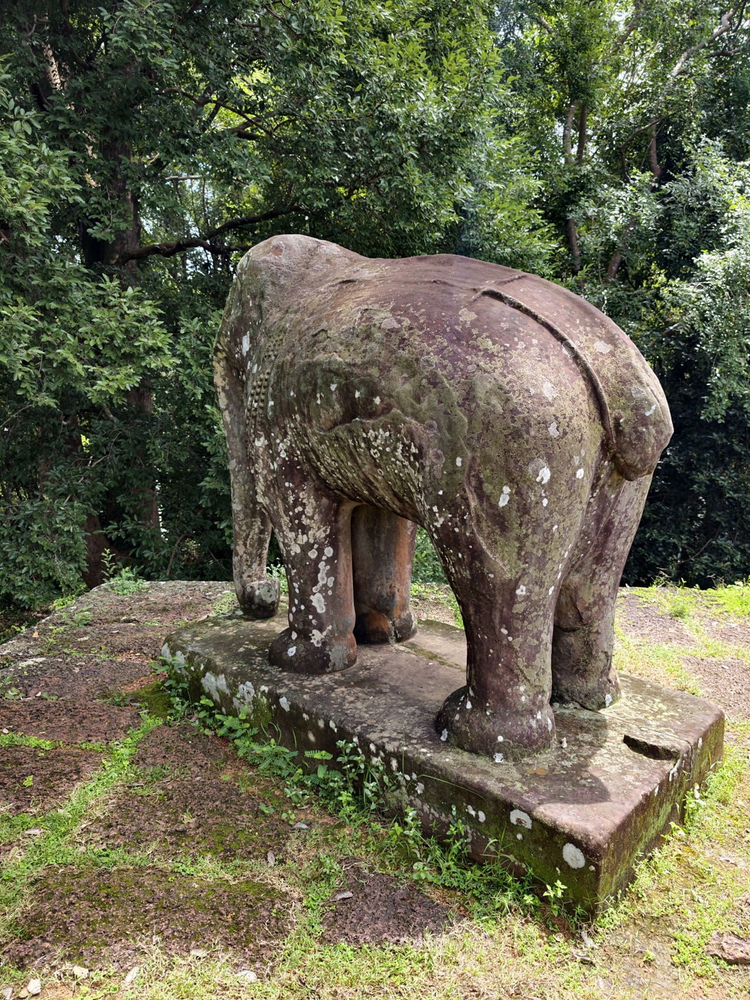
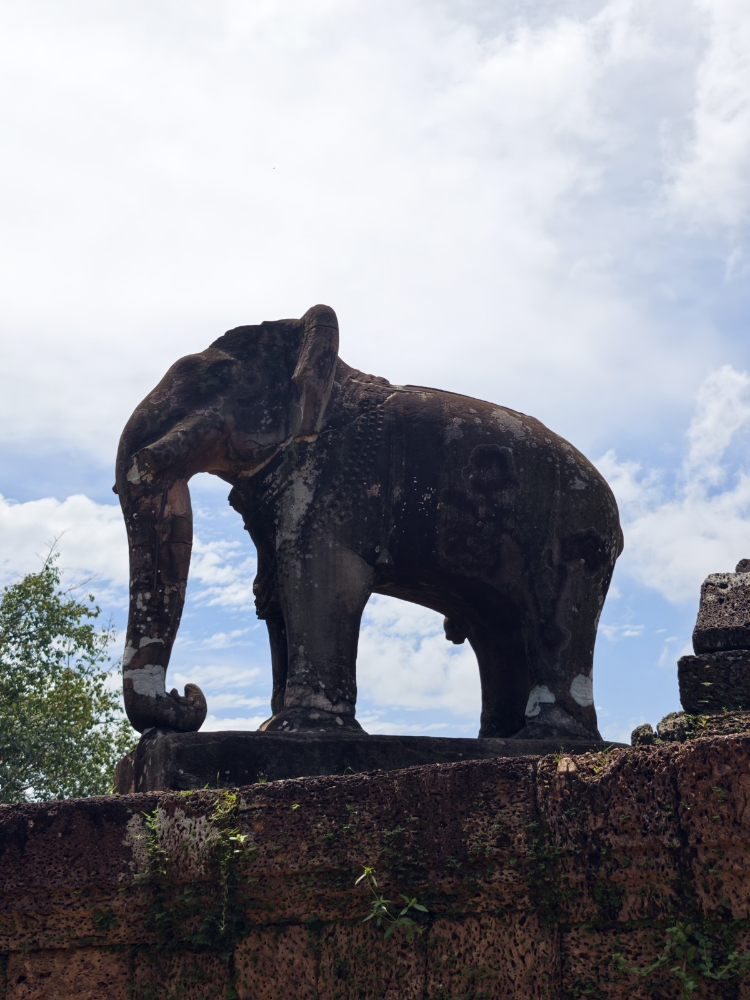
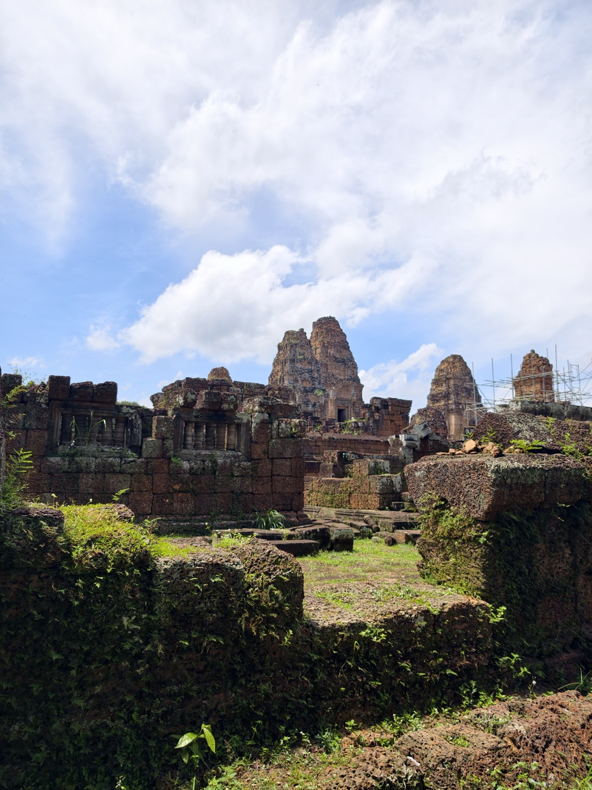

东梅蓬
东梅蓬建于九五二年，是罗贞陀罗跋摩二世的庙山，主供湿婆，也祭祀先王。它原本立在东巴莱湖中央的小岛上，当年要划船才能抵达——如今湖水早已干涸，塔山站在一片干地上。
它看起来很像变相寺，这不是错觉：两座庙几乎共用同一张图纸——三层台基、五座砖塔、转角立象——东梅蓬还早建九年。



东梅蓬建于九五二年，是罗贞陀罗跋摩二世的庙山，主供湿婆，也祭祀先王。它原本立在东巴莱湖中央的小岛上，当年要划船才能抵达——如今湖水早已干涸，塔山站在一片干地上。
它看起来很像变相寺，这不是错觉：两座庙几乎共用同一张图纸——三层台基、五座砖塔、转角立象——东梅蓬还早建九年。


